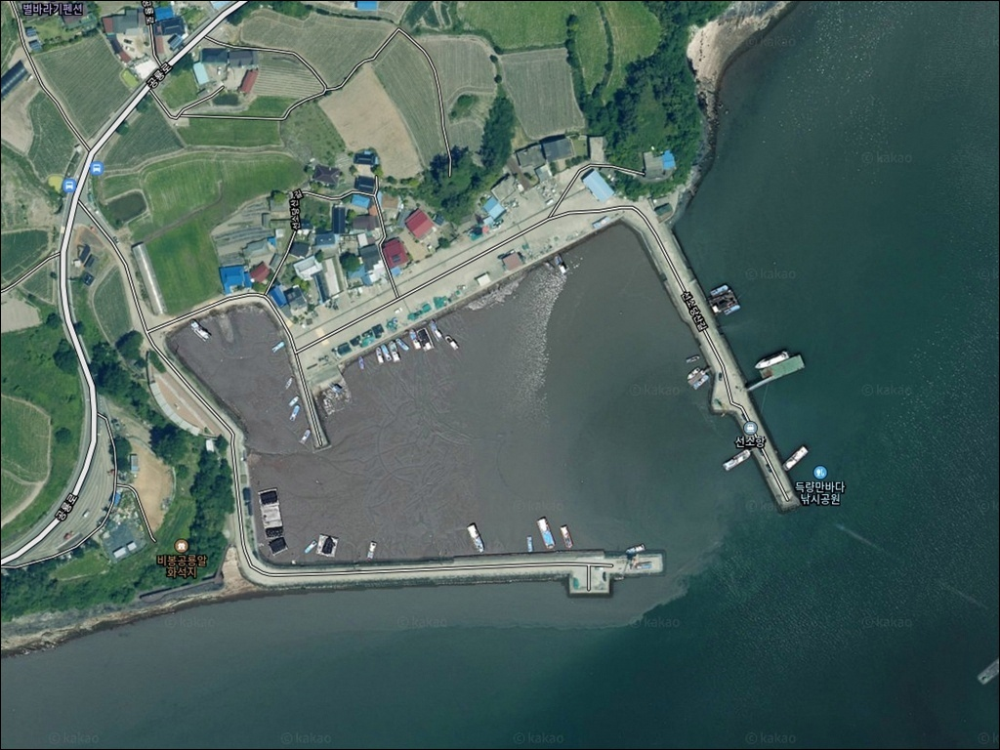
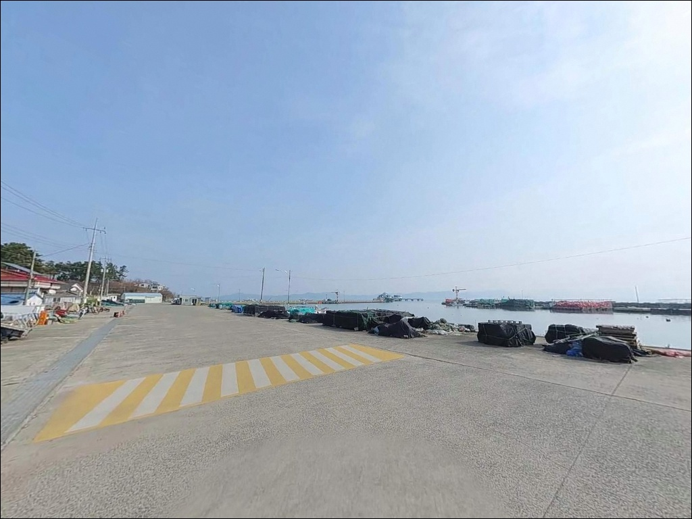
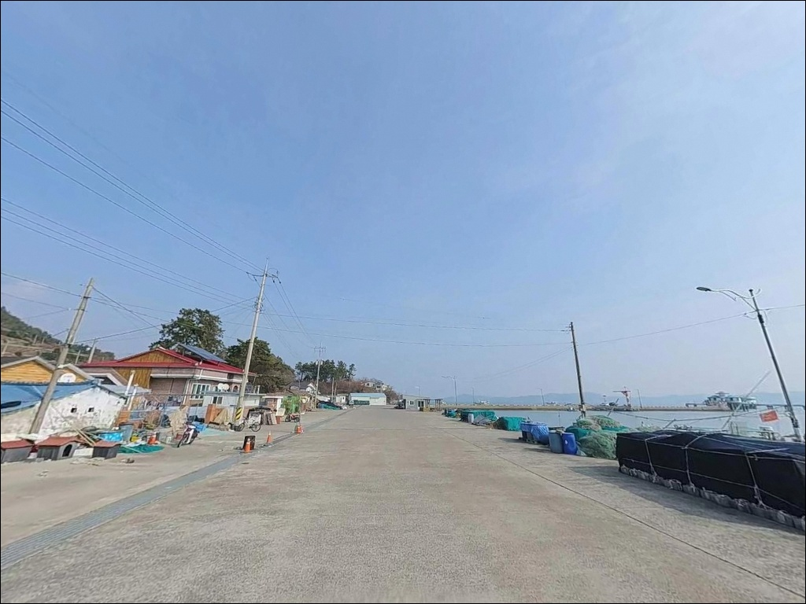
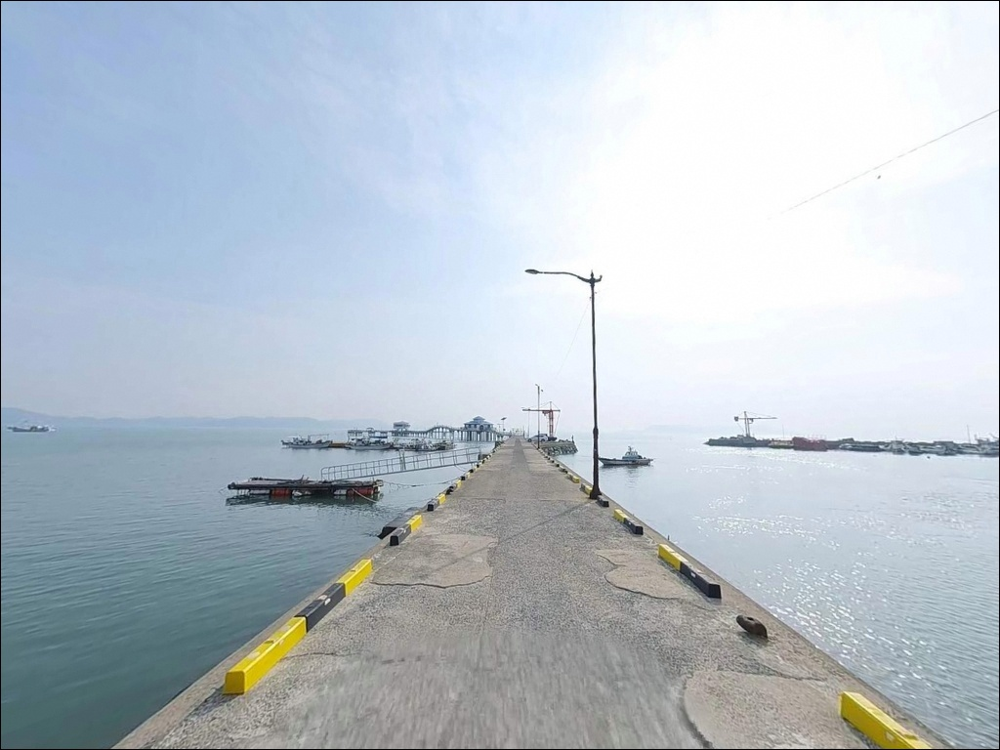
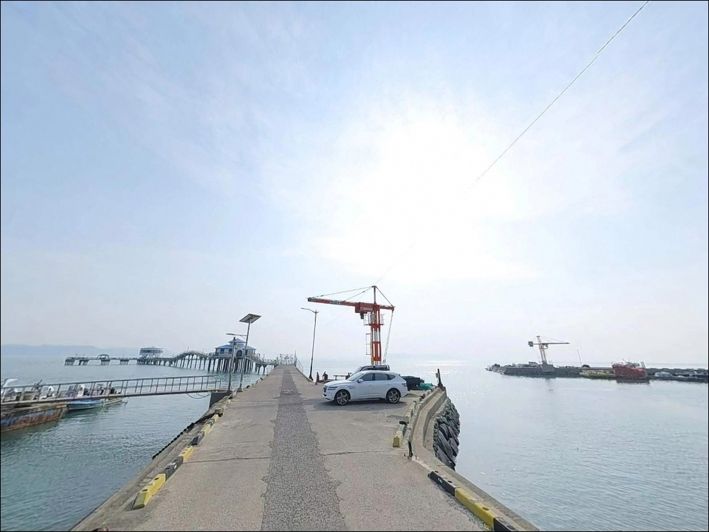
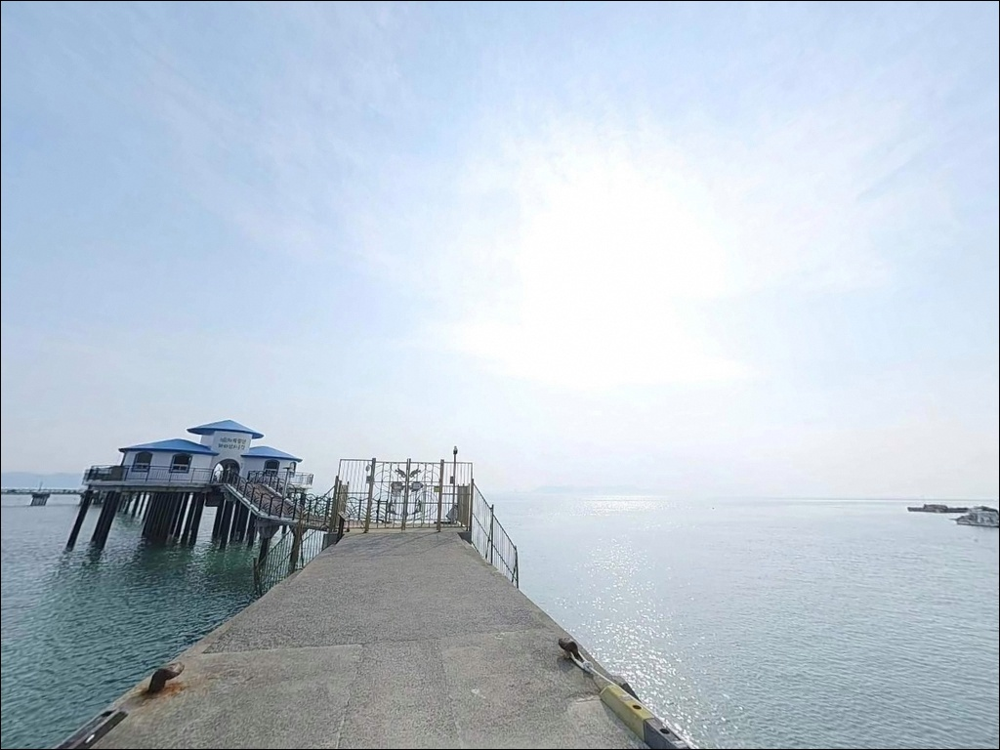
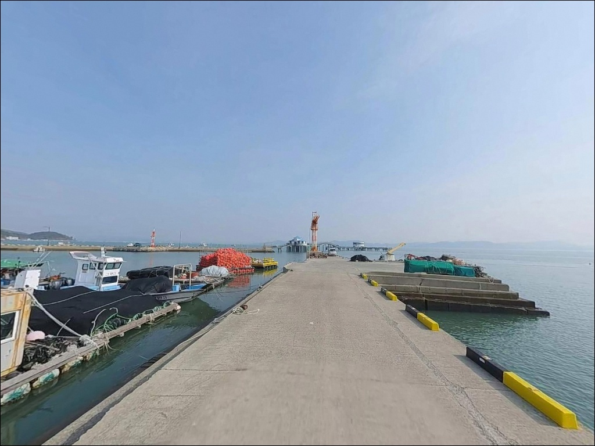
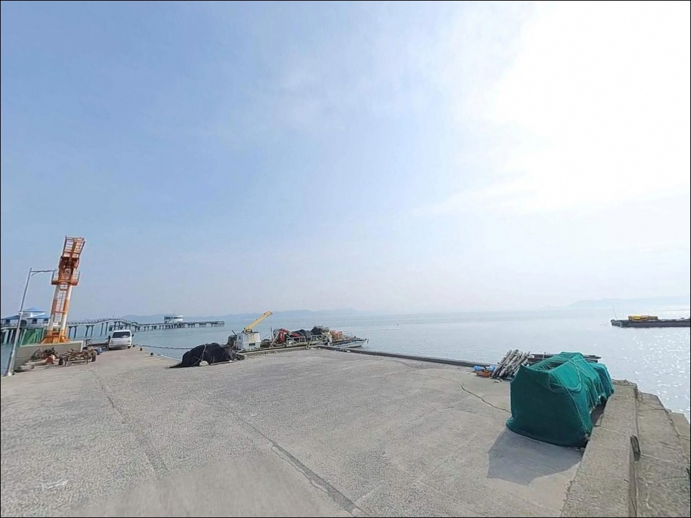
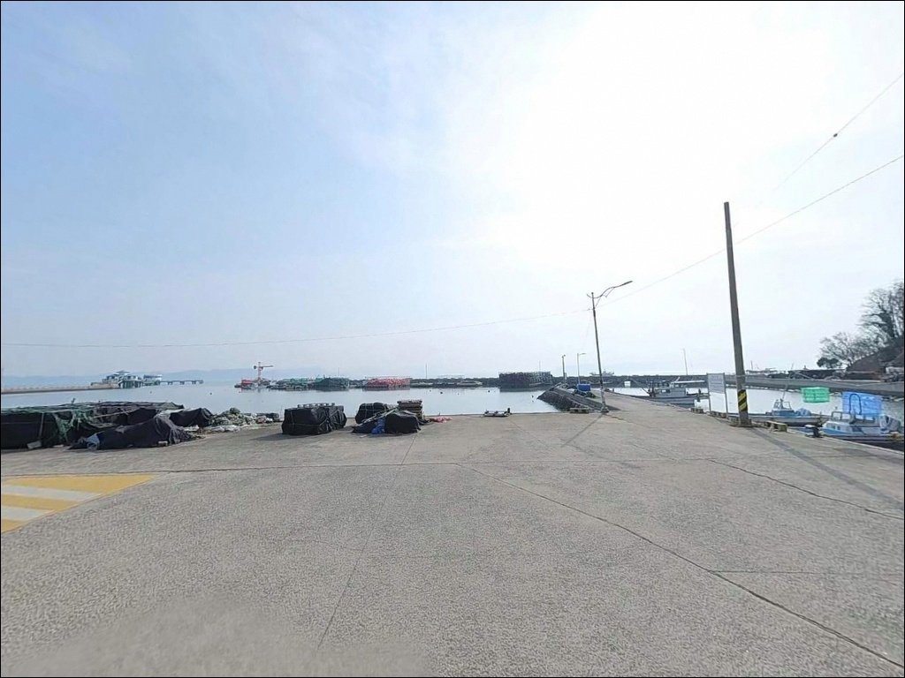

선소항, 득량만바다낚시공원, 전남 보성군 넓은 해변 바다 차박 낚시 포인트


포인트 안내
선소항(득량만바다낚시공원)
전남 보성군 득량면 비봉리 595-7
오전 6시 이전이나 오후 6시 이후 도착하면
해상 낚시공원 입장 자체가 막힙니다.
월요일은 정기 휴무일이기도 하므로
날짜와 시간 확인이 출조의 첫 번째 조건인
포인트입니다.
전남 보성군 득량면 비봉리,
득량만 안쪽에 자리한 선소항은
방파제에서 바다 쪽으로 170m 연결교를 내뻗어
해상 낚시공원과 연결된 구조입니다.
수심이 깊고 인공어초가 깔린 해역으로
감성돔과 숭어를 노리는 낚시터로
보성군 대표 바다낚시 명소 중 하나입니다.
이 글은 선소항의 진입 여건, 차박 환경,
낚시공원 구조와 방식별 공략 조건에 집중합니다.
조황 단정이나 특정 어종 보장은
이 글의 범위에 포함되지 않습니다.

1. 진입 동선과 차량 접근 여건
선소항까지는 포장도로가 마을 입구까지
끊김 없이 연결되어 있습니다.
남해고속도로 순천IC에서 국도 2호선을 따라
득량면 방면으로 진입한 뒤,
비봉리 해안 방향으로 빠지는 동선이
가장 일반적입니다.
도로 폭이 확보된 2차선 포장도로가
항 입구까지 이어지는 구조로,
대형 캠핑카나 카라반도 무리 없이 진입이 가능합니다.
항 내부는 물량장 공터가 넓어
회차에도 여유가 있는 편입니다.
주차는 해상 낚시공원 입구 인근 공용 주차 공간과
선착장 북측 물량장 공터를 이용합니다.
공룡알 화석지·공룡공원과 연계된
방문객 주차 공간이 조성되어 있어
여러 대 동시 주차가 가능한 구조입니다.

2. 차박 환경과 야간 체류 여건
선소항 주변은 낚시공원 입구 공용 주차 공간을
베이스로 삼는 차박 구조입니다.
어촌체험마을로 운영되는 선소마을 특성상
민가와 관광 시설 이용객 동선이 겹치는 구간이어서,
완전 고립형 포인트보다는
조용하지만 왕래가 있는 환경을 형성합니다.
가로등은 마을 주요 도로와 항 주변에 설치되어 있어
야간 시야 자체는 확보됩니다.
다만 민가가 가까운 구조이므로
차량 소음, 발전기 사용, 음악 재생은
삼가는 것이 기본 매너입니다.
득량만 내만 구조 덕분에 외해 파도 영향은
극히 제한적이며, 바람도 안정된 편입니다.
낚시 후 짧게 머무는 용도로는 나쁘지 않으나,
차박을 메인으로 계획한다면
공간 여유와 주차 상황을 현장에서
먼저 확인하는 편이 좋습니다.


3. 주변 편의시설 및 인프라 현황
선소항 인근에는 공룡알 화석지와 비봉공룡공원,
그리고 낚시공원 2층에 운영 중인 카페가
편의 시설의 역할을 일부 담당합니다.
득량면 중심부 방향으로 이동하면
마을 단위 소규모 슈퍼와 식당이
분포해 있습니다.
반경 10km 권으로 이동하면
득량면 소재지에 농협 하나로마트, 주유소,
보건소, 약국이 위치합니다.
보성읍 시내권까지는 차로 약 20~25분 거리로,
편의점·마트·병원 등
핵심 생활 인프라가 집중된 권역입니다.
출조 전 연료, 식수, 채비 소모품, 비상약품은
보성읍 또는 득량면에서 미리 챙겨두는 것이
가장 현실적인 준비 동선입니다.

4. 낚시공원 방문 전 반드시 확인해야 할 운영 조건
득량만 바다낚시공원 이용을 목적으로 출조한다면
운영 시간과 휴무일을 먼저 확인해야 합니다.
운영 시간은 오전 6시부터 오후 6시까지이며,
매주 월요일, 1월 1일, 설·추석 연휴는
정기 휴무로 입장이 불가합니다.
입장료는 성인 기준 2,000원이며,
낚시 이용료는 별도로 20,000원이 부과됩니다.
해상 시설과 연결교 구간은 난간이 설치되어 있으나,
바닥이 미끄러울 수 있어
구명조끼 착용과 미끄럼 주의는 필수입니다.
득량만은 조류 흐름이 살아 있는 해역이므로
물때를 사전에 확인하고 입장하는 편이
낚시 효율 면에서 유리합니다.
사리 전후에는 조류가 빨라지는 경향이 있으며,
바다타임에서 득량만 기준 물때를 조회하면
조금 전후 타이밍을 노려 자리를 잡는
판단 기준이 됩니다.

5. 득량만 내만 지형 기반 낚시 여건 분석
선소항의 핵심 지형 조건은
수심이 깊고 인공어초가 설치된 해역입니다.
방파제는 끝단이 'L'자 형태로 꺾여 있고
외항 방향으로 테트라포드가 설치된 구조로,
내항 쪽은 수면이 잔잔하고
외항 방향으로 갈수록 수심 변화가 생기는
지형입니다.
평균 수심은 만 내측 특성상 3~5m 안팎이지만,
방파제 끝단과 외항 정면 방향으로는
수심이 깊어지는 구간이 형성됩니다.
바닥은 주로 펄과 모래로 이루어져 있어
밑걸림이 적어 채비 손실 부담이 낮은 편입니다.
해상 낚시공원 쪽은 170m 연결교 끝단에
약 80m 길이의 해상 낚시터가 조성된 구조입니다.
부잔교식 시설과 갯바위형 낚시 구역이 함께 있어
낚시 방식에 따라 자리를 선택하는 폭이 넓습니다.
어초 주변 수심층을 공략하는 방식이
이 포인트에서 가장 잘 통하는 전략입니다.
출조 전에 최신 조황은 꼭 검색해 보시기 바랍니다.


6. 포인트에 어울리는 낚시 스타일
선소항에서 가장 기본적인 낚시 방식은
릴찌낚시와 원투낚시입니다.
내만형 수역에 인공어초가 결합된 구조는
감성돔과 숭어를 노리는 찌낚시 방식에
적합한 조건을 고루 갖추고 있습니다.
반유동 채비로 방파제 꺾임 구간과
해상 낚시공원 끝단 쪽을 천천히 탐색하는 방식이
이 포인트 지형에 잘 맞습니다.
원투낚시는 펄·모래 저질의 넓은 선착장과
내항 전면부를 활용합니다.
밑걸림이 적은 바닥 조건 덕분에
도다리류나 장어 계열 대상어를
노리기 좋은 구조이며,
조류가 느려지는 조금 전후 타이밍에
채비를 멀리 보내는 방식이 효과적입니다.
루어낚시는 해상 낚시공원 구간과
방파제 외항 테트라포드 주변을 공략합니다.
조류 영향이 살아 있는 구간에서
농어 계열 대상어가 반응하는 조건이 형성되므로,
프리리그나 지그헤드 계열 채비로
수심층을 나눠 탐색하는 방식이 어울립니다.

7. 대안 포인트와 플랜 B 동선
선소항 해상 낚시공원이 휴무이거나
원하는 자리가 이미 찬 경우라면
득량만 일대 소형 방파제와 선착장이
첫 번째 대안입니다.
같은 득량만 내만 해역을 공유하므로
어종 패턴이 유사하고,
조류 조건도 비슷한 구조입니다.
차박 여건이 더 넉넉한 대안이 필요하다면
율포솔밭해수욕장 방향이 실질적인 플랜B입니다.
소나무 숲과 백사장, 넓은 주차 공간을 갖춘 구조로
선소항보다 차박 베이스로 활용하기
훨씬 여유로운 환경을 제공합니다.
거리는 선소항에서 차로 이동 가능한 권역입니다.
낚시를 주목적으로 하는 대안이라면
비봉공룡공원 인근 해안 갯바위 구간도
자연 갯바위 포인트가 산재해 있어
탐색해볼 만합니다.
선소항을 기준으로 같은 해안선 방향으로
이동하면서 플랜B를 운용하는 동선이 효율적입니다.

운영 조건 하나 확인하면
선소항이 편한 포인트로 바뀝니다
찌낚시나 원투낚시를 즐기는 낚시인이라면
선소항의 구조는 잘 맞는 지형입니다.
수심 있는 해역에 인공어초까지 갖춰진 조건은
감성돔과 숭어를 노리기에 충분하고,
방파제 끝단과 해상 낚시공원 구간을
탐색하는 방식이 이 포인트에 어울립니다.
다만 해상 낚시공원 이용이 목적이라면
반드시 운영 시간(06:00~18:00)과
월요일 휴무를 먼저 확인해야 합니다.
이 조건 하나를 놓치면
출조 전체가 공회전으로 끝날 수 있습니다.
날짜·시간·물때 확인,
이 세 가지를 갖추고 간다면
득량만 안쪽에서 안정적인 조과를
기대해볼 수 있는 포인트입니다.
공룡알 화석지와 비봉공룡공원이 바로 옆에 붙어 있어
가족 동행 출조에도 어울리는 자리이며,
낚시 후 잔잔한 득량만 야경을 바라보며
하룻밤 머무는 차박으로 마무리하기에
나쁘지 않은 포인트입니다.